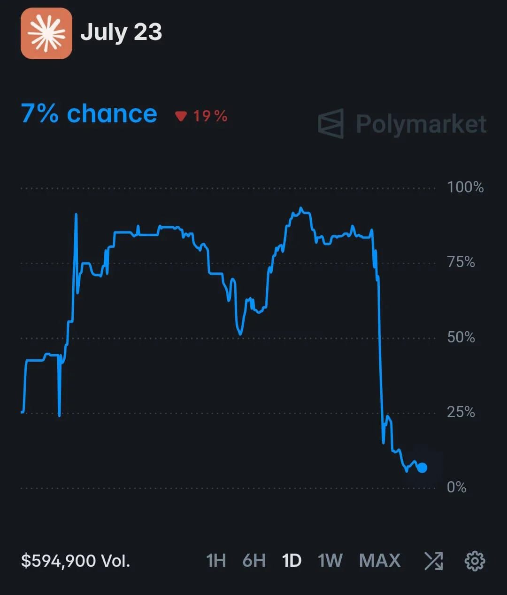

The Rumor That Sent This Market From 92% to 7% in Minutes

For most of July 23, a Polymarket contract asking whether Anthropic would release the next Claude Opus model that day was trading like a near-certainty. Odds that had opened the week in the 20-30% range climbed through the 60s, dipped, then spiked above 90%. By the close, the same contract had fallen all the way to 7%. Nobody at Anthropic had said a word.
Zoom out and the shape of the chart tells the whole story: a market that spent the day chasing a leak, not a launch.
A contract built for exactly this kind of noise
The market itself, "Next Claude Opus released on...?", was narrowly written on purpose. It only resolves "Yes" if Anthropic ships a model it explicitly names Opus, made available to the general public — open beta or waitlist counts, a closed internal test does not. Sonnet, Haiku, or a Mythos-tier release like Fable 5 don't qualify, no matter how capable they are. That specificity is exactly what made the contract so easy to whipsaw: it doesn't take a real launch to move the price, just a rumor that the launch is imminent.
And going into July 23, there was no shortage of rumor to work with.
Where the 92% came from
The run-up traces back roughly two weeks. On July 9, a developer using Cursor's IDE reportedly spotted an unfamiliar entry in the model picker — "Claude Honeycomb EAP," described as a research model with a 1-million-token context window and per-turn effort controls, sitting next to the familiar Opus and Sonnet options. It vanished within hours, but not before screenshots spread. A few days later, on July 14, some trackers reported a "claude-opus-5" identifier string briefly showing up inside Google's Vertex AI Model Garden, though no lasting listing ever surfaced to confirm it.
From there the rumor picked up its own momentum rather than new evidence. A screenshot attributed to an AI researcher made the rounds before being deleted. Several well-followed builders publicly asked whether "Opus 5" was landing that week. A handful of users claimed their outputs from Opus 4.8 suddenly felt sharper, and speculated they were quietly being routed to an unannounced Opus 5 wearing the old model's name. None of this was ever verified by Anthropic — it was screenshots, deleted posts, and pattern-matching passed around fast enough to start looking like a fact.
Layered on top was a scheduling coincidence that gave the rumor a very specific, very persuasive shape: Anthropic's last three Opus point releases — 4.6, 4.7, and 4.8 — had each landed on a Thursday. July 23 was a Thursday, and it fell 56 days after Opus 4.8, already the longest gap between Opus releases of the year. Three data points isn't a release schedule, but it was more than enough for traders looking for a reason to buy "Yes."
Then the day arrived, and nothing shipped
No model card. No API string. No post on Anthropic's blog. Opus 4.8, released back on May 28, was still the newest model carrying the Opus name when the sun set on July 23. The leak, the deleted screenshot, and the Thursday pattern had produced plenty of conviction and zero confirmation.
The market reacted the way markets do when a story it was pricing in evaporates: fast, and by a lot. Within minutes of the day's momentum stalling out, the contract went from the low-90s to single digits. $594,900 in volume had changed hands on that one-day chart by the time it was over — a lot of it, almost certainly, chasing a headline that never came.
The trader who didn't click buy
One account that watched the crash unfold summed up the day well: for hours, it felt like everyone else knew something they didn't, and the only way to not miss out was to buy in. The odds weren't coming from an Anthropic announcement — they were coming from social momentum feeding on itself. Every climb in the price looked like confirmation, right up until it wasn't.
The lesson wasn't really about Anthropic's release calendar. It was about the difference between a price that reflects new information and a price that reflects how many people have seen the same screenshot. Resisting the urge to trade a market that's moving on vibes, not verification, is itself a position — and on July 23, it was the better one.
The takeaway
Leaked model pickers, deleted screenshots, and "it felt smarter" anecdotes are the kind of evidence that spreads fast precisely because it can't be checked in real time. That's what makes rumor-driven markets so dangerous to trade and so easy to watch in hindsight: the chart above isn't a story about Claude Opus at all. It's a story about how quickly a crowd can talk itself into 92% certainty about something nobody actually confirmed — and how expensive it is to be the last one still holding "Yes" when the confirmation never shows up.
Track the live odds and full price history on Polymarket.